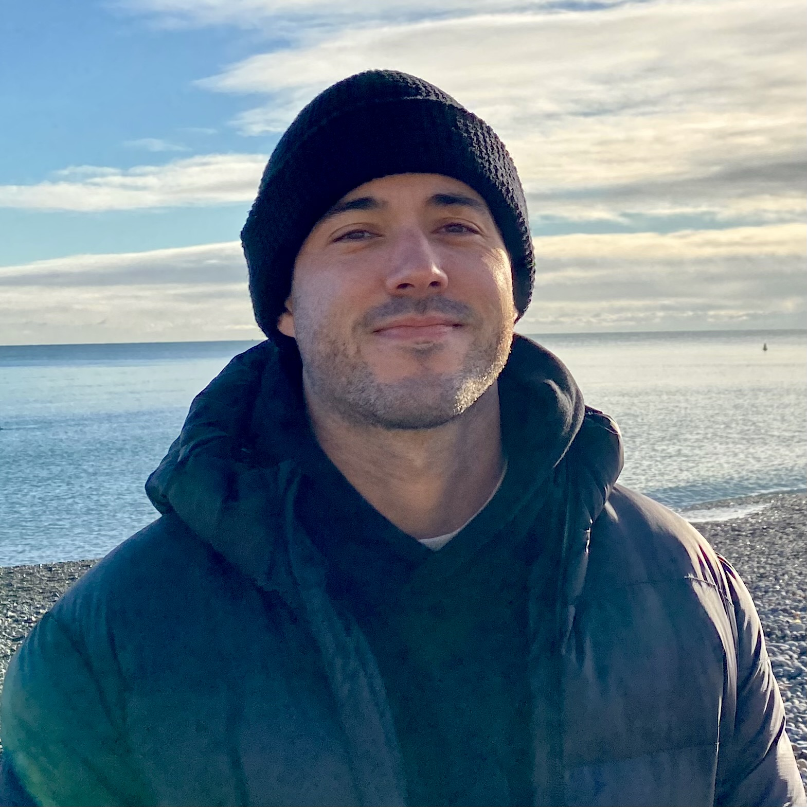

James Huia Bickerton CV 2025

Summary
I am a senior physiotherapist with five years of experience working in
private practice and aged care across New Zealand and Australia. My career
has been marked by leadership roles, mentorship, and a strong commitment
to patient outcomes. I am now pursuing a transition into software
development, starting with web development and front-end technologies. I
aim to leverage my healthcare background and problem-solving skills to
contribute to tech-driven innovations, particularly in health tech and app
development.
Education
Bachelor of Health Science (Physiotherapy)
Auckland University of Technology (AUT) - 2016 - 2019
Saint Kentigern College
NCEA Level 1, 2 and 3 - 2008 - 2013
Work Experience
Pure Physio
Musculoskeletal Physiotherapist
Melbourne CBD, Australia - January 2024 - Present
-
Managed a diverse caseload of office-based professionals, WorkSafe
clients, EPC clients and private paying clients.
-
Conducted ergonomic assessments and developed tailored treatment plans.
- Lead group exercise and pilates classes.
The Rehab Co
Musculoskeletal Physiotherapist
Auckland, New Zealand - January 2023 - December 2023
-
Treated complex sporting injuries in a high-performance clinic setting.
-
Supervised and mentored year 4 physiotherapy students during their
8-week clinical placements.
Move Better for Life
Musculoskeletal & Community Physiotherapist
Armidale, NSW, Australia - September 2022 - December 2022
-
Provided clinic and home-based care for patients, including NDIS
participants.
-
Performed occupational functional assessments and managed work-related
injury rehabilitation (SIRA).
Encara
Aged Care Physiotherapist
Swansea & Sunshine Coast, Australia - March 2022 - July 2022
-
Served as lead physiotherapist at two sites, overseeing pain management
programs and group exercise sessions.
-
Conducted manual handling training and delivered comprehensive care to
aged care residents.
Encara
Physio Connect
Auckland, New Zealand - March 2020 - February 2022
-
Delivered musculoskeletal care to patients across all age ranges and
injury types.
-
Achieved the highest retention rate within the clinic through excellent
patient care.
Skills
Physiotherapy Skills
- Functional, worker’s capacity, and ergonomic assessments.
-
Advanced pain management techniques, including dry needling (foundations
course completed).
-
Extensive knowledge of Gensolve, Pracsuite, and Cliniko databases.
-
Experienced in worker's compensation protocols (SIRA and WorkSafe).
Technical skills
-
Beginner in web development with a focus on front-end technologies.
-
Keen interest in health tech and app development, with plans to expand
into back-end development.
- Completed multiple FreeCodeCamp and Udemy courses
Leadership & Mentorship
- Led training for new physiotherapist in NSW, Australia
-
Supervised final year physiotherapy students on their 8 week placements.
Communication & Teamwork
-
Skilled in adapting communication styles to suit patients, carers, and
families.
-
Delivered presentations on culture, communication, and pain management
-
Collaborated with multidisciplinary teams to optimise patient outcomes.
Certifications
- FreeCodeCamp Certification in Responsive Web Design
- Udemy: Responsive Real-World Websites with HTML & CSS
Referees
Available upon request